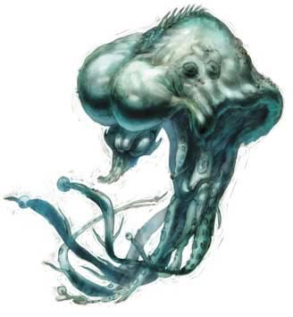

大型异怪

| 生命骰： | 12d8+36 (90 hp) |
| 先攻： | +2 |
| 速度： | 10 英尺，飞行 90 英尺（完美） |
| 防御等级： | 21 (�C1 体型，+2 敏捷，+10 天生)，接触 11，措手不及 19 |
| 基本攻击／擒抱： | +9/+17 |
| 攻击： | 触须 +13 近战 |
| 全力攻击： | 4 触须 +13 近战，活化眼珠 +11 远程接触 |
| 伤害： | 触须 2d6+4，活化眼珠 3d6 附加毒素 |
| 面宽／触及： | 10 英尺/5 英尺 |
| 特殊攻击： | 活化眼珠，临终爆裂，精通攫抓，毒素，类法术能力，窃眼 |
| 特殊能力： | 免疫强酸，全域视野，盲视 80 英尺，黑暗视觉 60 英尺，伤害减免 10/魔法，免疫毒素，再生 4 |
| 豁免： | 强韧 +7，反射 +8，意志 +10 |
| 属性： | 力量 18，敏捷 15，体质 17，智力 19，感知 14，魅力 16 |
| 技能： | 躲藏 +13，聆听 +17，潜行 +17，搜索 +19，侦察 +17，生存 +2（追踪时+4） |
| 专长： | 战斗反射，拨挡飞箭，闪电反射，武器专攻（活化眼珠），武器专攻（触须） |
| 地域： | 任意温带、温暖、丘陵、沼泽或地下 |
| 组织： | 单独或成对 |
| 挑战等级： | 12 |
| 宝物： | 标准 |
| 阵营： | 通常混乱邪恶 |
| 进化： | 13�C16 HD (大型)；17�C36 HD (超大型) |
窃眼怪是一种偏执而怪诞的生物，它会窃取敌人的视力。在宣称某片领土为其所有之后，它会驱逐所有其他居民，无论它们多么渺小。它的领地可能只涵盖废弃堡垒中的几个房间，但对窃眼怪而言，这片区域是其神圣的领地。
窃眼怪的身体看起来像一只病态苍白绿色的漂浮战舰水母（man-of-war jellyfish）。由于体内携带大量气体，它会脉动和起伏；有时该生物皮肤下的一个气袋会发生泄漏，导致气体在缓慢逸出时发出嘶嘶声。从漂浮的身体上垂落着许多带倒刺的触须，上面串着窃眼怪过去猎物的眼珠。
窃眼怪可以活化它捕获的眼珠并派它们出去监视其领地。那些靠近窃眼怪巢穴的人可能首先在发现其中一颗漂浮的眼珠时意识到这一事实。到那时，窃眼怪很可能也已发现了入侵者，并立即采取攻击步骤，要么杀死他们，要么将他们赶走。
窃眼怪会说通用语和地底通用语。
窃眼怪通常从远距离开始遭遇，方法是向对手派送活化的眼珠。这些眼珠冲向该生物的敌人并尝试攻击它们，释放出窃眼怪体内携带的污秽气体。如果它开始缺少眼珠，它会从猎物身上窃取更多，抓住对手并用其带倒刺的触须将他们的眼睛撕下。
活化眼珠 (Animate Eyeballs) (Su)：窃眼怪一次最多可以控制六颗捕获的眼珠，如同它们是漂浮的眼球，类似于窥视魔眼法术（prying eyes）所创造的眼球。这些眼珠在串在该生物带倒刺的触须上时充满了窃眼怪的有毒气体，并且窃眼怪也可以将它们用作武器。它可以对一个 80 英尺内的任何对手进行一次远程接触攻击。成功意味着眼珠撞击到受害者并爆炸。此类角色受到 3d6 点伤害并暴露于窃眼怪的毒素之下（见下文）。
临终爆裂 (Death Throes) (Ex)：当被杀死时，窃眼怪会在一团毒气云中爆炸，对 20 英尺范围内的一切造成 3d6 点伤害并使那些受害者暴露于其毒素之下（见下文）。
精通攫抓 (Improved Grab) (Ex)：如果窃眼怪用触须攻击命中一个体型至少比它小一级的对手，它在造成正常伤害的同时，能以一个不会引发借机攻击的自由动作尝试开始擒抱（擒抱加值 +17）。如果擒抱成立，它可以在下一轮尝试移除对手的眼睛。此后，窃眼怪可以选择正常进行擒抱，或仅用其触须来钳制对手（擒抱检定承受�C20减值，但窃眼怪不被视为被擒抱）。无论哪种情况，它在后续轮中每次成功的擒抱检定都会自动造成触须伤害。
毒素 (Poison) (Ex)：窃眼怪在每次用活化眼珠成功攻击或在临终爆裂时都传递其毒素（强韧 DC 19 则无效）。初始和后续伤害相同（1d4 力量加上 1d4 体质）。
类法术能力 (Spell-Like Abilities)：随意施放――秘法眼（arcane eye）；每日三次――黑暗术（darkness），隐形术（invisibility），穿墙术（passwall），真知术（true seeing）。施法者等级 12 级；豁免 DC 13 + 法术等级。
*窃眼怪只有在触须上有可用作秘法眼的眼珠时，才能使用其秘法眼和真知术的类法术能力。
窃眼 (Steal Eyes) (Ex)：一旦对手被擒抱了 1 轮，窃眼怪就可以尝试强行移除其眼睛。它必须进行一次对抗擒抱检定才能这样做。如果成功，受害者必须进行一次强韧豁免（DC 20），否则永久失明，其眼球被从眼窝中移除。这些眼珠现在被刺穿在窃眼怪带倒刺的触须上，将在 3 轮内充满气体，准备好用作武器。
全域视野 (All-Around Vision) (Ex)：窃眼怪可以同时看到所有方向。因此，它在搜索和侦察检定上有+4种族加值，并且它不能被夹击。窃眼怪只有在触须上附有眼珠时才能从此能力中获益。
盲视 (Blindsight) (Ex)：窃眼怪实际上是盲目的，但它通过使用其他感官（主要是听觉和嗅觉，但也通过感知振动和其他环境线索）进行机动和战斗的能力与具有视力的生物一样。此能力使它能够辨别 80 英尺范围内的物体和生物。窃眼怪通常不需要进行侦察或聆听检定就能注意到其盲视范围内的生物。窃眼怪仅在触须上没有附着的眼珠时才会依赖其盲视，这将使其失去全域视野。
再生 (Regeneration) (Ex)：银制武器和锐锋keen武器会对窃眼怪造成正常伤害。不造成生命值伤害的攻击形式无视再生，窃眼怪也无法恢复因饥饿、口渴或窒息而损失的生命值。